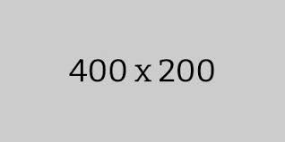

- Assignment 2: Basic CSS
- Assignment 3: Flex Box
- Assignment 4: CSS Recreation 
- Assignment 5:
- Assignment 6:
Assignments


Provides proper formatting and understanding of CSS coding building of off the html fundamentals giving style to what was previously learned.

Building off what was learned for both CSS and HTML, it pushes website flair a little further with addition to flexing the website to align with a smaller or larger screen.
Builds more on css and website fromation while instorduing new ways of formatting to make website look more appealing.
Insert
Insert